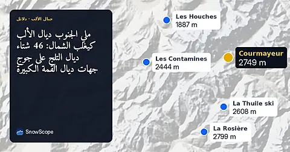

تقارير التلج · مقارنة المناطق
تقارير يومية ديال التلج للي كيتزلجو: فين كاين التلج، شنو جاي، وفين تمشي تتزلج، من الخريطة ديال التلج ديال SnowScope ومحطات القياس. كل رقم جاي من المعطيات ديال داك النهار.
الثلاثاء 10 نونبر 2026

مناطق التلج · 10 نونبرواش نونبر مليان بالتلج كيعني شتا كبيرة؟ جربناها على 46 موسم
قارنّا التلج اللي كاين نهار 10 نونبر مع أكبر علو ديال التلج فكل موسم، ف 46 محطة ديال التزلج وعلى 46 موسم. البداية بالتلج كتعاون، ولكن أقل من داكشي اللي كيتخيلو بزاف ديال المتزلجين.

جبال الألب · 10 نونبرملي الجنوب ديال الألب كيغلب الشمال: 46 شتاء ديال التلج على جوج جهات ديال القمة الكبيرة
ف 24 شتاء من 46، المحطات اللي فالجهة الإيطالية وجنوب الألب الفرنسية جاتهم شتوية كبر نسبيا من الجهة الشمالية. المبيان، العوام الكبار، والطقس اللي كان موراهم.
SnowScope فالتيليفون ديالكالتلج ديال كل محطة، التنبيهات ديال التلج الطري والخريطة 3D، فابور.
حمّل التطبيق